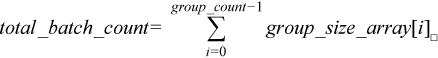
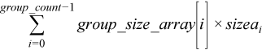
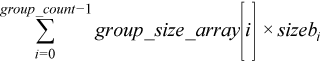
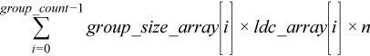

2.1.2.4.1. gemm_batch¶
Computes groups of matrix-matrix product with general matrices.
Syntax
Group API
-
void
gemm_batch(queue &exec_queue, buffer<transpose, 1> &transa_array, buffer<transpose, 1> &transb_array, buffer<std::int64_t, 1> &m_array, buffer<std::int64_t, 1> &n_array, buffer<std::int64_t, 1> &k_array, buffer<T, 1> alpha_array, buffer<T, 1> &a_array, buffer<std::int64_t, 1> &lda_array, buffer<T, 1> &b_array, buffer<std::int64_t, 1> ldb_array, buffer<T, 1> &beta_array, buffer<T, 1> &c, buffer<std::int64_t, 1> &ldc_array, std::int64_t group_count, buffer<std::int64_t, 1> &group_size_array)¶
Strided API
-
void
gemm_batch(queue &exec_queue, transpose transa, transpose transb, std::int64_t m, std::int64_t n, std::int64_t k, T alpha, buffer<T, 1> &a, std::int64_t &lda, std::int64_t stridea, buffer<T, 1> &b, std::int64_t ldb, std::int64_t strideb, T beta, buffer<T, 1> &c, std::int64_t ldc, std::int64_t stridec, std::int64_t batch_size)¶
gemm_batch supports the following precisions.
T |
|---|
|
|
|
|
Description
The gemm_batch routines perform a series of matrix-matrix operations with general matrices. They are similar to the gemm routine counterparts, but the gemm_batch routines perform matrix-matrix operations with groups of matrices. The groups contain matrices with the same parameters.
For the group API, the operation is defined as
offa = 0, offb = 0, offc = 0
for i = 0 … group_count – 1
transa, transb, m, n, k, lda, ldb, ldc, alpha, beta and group_size at position i in transa_array, transb_array, m_array, n_array, k_array, lda_array, ldb_array, ldc_array, alpha_array, beta_array and group_size_array
sizea = transa == onemkl::transpose::N ? lda * k : lda * m;
sizeb = transb == onemkl::transpose::N ? ldb * n : ldb * k;
sizec = ldc * n;
for j = 0 … group_size – 1
A, B, and C are matrices of size sizea, sizeb and sizec at offset offa, offb and offc in a, b and c.
C := alpha * op(A) * op(B) + beta * C
offa += sizea, offb += sizeb, offc += sizec
end for
end for
For the strided API, the operation is defined as
for i = 0 … batch_size – 1
A, B and C are matrices at offset i * stridea, i * strideb, i * stridec in a, b and c.
C = alpha * op(A) * op(B) + beta * C
end for
where:
op(X) is one of op(X) = X, or op(X) = XT, or op(X) = XH
alphaandbetaare scalarsA,B, andCare matricesThe a, b and c buffers contains all the input matrices. The stride between matrices is either given by the exact size of the matrix (for the group API) or by the stride parameter. The total number of matrices in a, b and c buffers is given by the

for the group API or by the
batch_sizeparameter for the strided API.
Here, op(A) is mxk, op(B) is
kxn, and C is mxn.
Input Parameters - Group API
- transa_array
Buffer holding
group_count onemkl::transposevalue.For the group
i,transais theith element in the transa_array buffer and specifies the form ofop(A)used in the matrix multiplication. See oneMKL defined datatypes for more details.- transb_array
Buffer holding
group_count onemkl::transposevalue.For the group
i,transbis theith element in the transb_array buffer and specifies the form ofop(B)used in the matrix multiplication. See oneMKL defined datatypes for more details.- m_array
Buffer holding
group_countinteger. For the groupi,mis theith element in the m_array buffer and specifies the number of rows ofop(A)andC. Must be at least zero.- n_array
Buffer holding
group_countinteger. For the groupi,nis theith element in the n_array buffer and specifies the number of columns ofop(B)andC. Must be at least zero.- k_array
Buffer holding
group_countinteger. For the groupi,kis theith element in the k_array buffer and specifies the number of columns ofop(A)and rows ofop(B). Must be at least zero.- alpha_array
Buffer holding
group_countscalar element. For the groupi,alphais theith element in the alpha_array buffer and specifies the scaling factor for the matrix-matrix product.- a
Buffer holding the input matrices
A. The total size of the bufferamust be at least the sum of the sizes of all the matriciesA. That is,
where
sizeai = lda_array[i] * (transa == onemkl::transpose::N ? k : m)See Matrix Storage for more details.
- lda_array
Buffer holding
group_countinteger. For the groupi,ldais theith element in the lda_array buffer and specifies the leading dimension ofA. Must be at leastmifAis not transposed, and at leastkifAis transposed. Must be positive.- b
Buffer holding the input matrices
B. The total size of the bufferbmust be at least the sum of the sizes of all the matriciesB. That is,
where
sizebi = ldb_array[i] * (transb == onemkl::transpose::N ? n : k)See Matrix Storage for more details.
- ldb_array
Buffer holding
group_countinteger. For the groupi,ldbis theith element in the ldb_array buffer and specifies the leading dimension ofB. Must be at leastkifBis not transposed, and at leastnifBis transposed. Must be positive.- beta_array
Buffer holding
group_countscalar element. For the groupi,betais theith element in the beta_array buffer and specifies the scaling factor for matrix C.- c
Buffer holding the input/output matrices
C. The total size of the buffercmust be at least the sum of the sizes of all the matriciesC. That is,
See Matrix Storage for more details.
- ldc_array
Buffer holding
group_countinteger. For the groupi,ldcis theith element in the ldc_array buffer and specifies the leading dimension ofC. Must be positive and at leastm.- group_count
Specifies the number of groups. Must be at least 0.
- group_size_array
Buffer holding
group_countinteger. For the groupi, theith element in the group_size_array buffer specifies the number of matrix multiply operations in groupi. Each element ingroup_size_arraymust be at least 0.
Output Parameters - Group API
- c
Overwritten by the
mi-by-ni matrix(alphai*op(A)*op(B) + betai*C)for groupi.
Input Parameters - Strided API
- transa
Specifies
op(A)the transposition operation applied to the matrices A. See oneMKL defined datatypes for more details.- transb
Specifies
op(B)the transposition operation applied to the matrices B. See oneMKL defined datatypes for more details.- m
Number of rows of
op(A)andC. Must be at least zero.- n
Number of columns of
op(B)andC. Must be at least zero.- k
Number of columns of
op(A)and rows ofop(B). Must be at least zero.- alpha
Scaling factor for the matrix-matrix products.
- a
Buffer holding the input matrices
A. Must have size at leaststridea*batch_size.- lda
Leading dimension of the matrices
A. Must be at leastmif the matricesAare not transposed, and at leastkif the matricesAare transposed. Must be positive.- stridea
Stride between the different
Amatrices.If
Aare not transposed, the matricesAarem-by-kmatrices so stridea must be at leastlda*k.If
Aare transposed, the matricesAarek-by-mmatrices so stridea must be at leastlda*m.- b
Buffer holding the input matrices
B. Must have size at leaststrideb*batch_size.- ldb
Leading dimension of the matrices
B. Must be at leastkif the matricesBare not transposed, and at leastnif the matricesBare transposed. Must be positive.- strideb
Stride between the different
Bmatrices.If
Bare not transposed, the matricesBarek-by-nmatrices so strideb must be at leastldb*n.If
Bare transposed, the matricesBaren-by-kmatrices so strideb must be at leastldb*k.- beta
Scaling factor for the matrices
C.- c
Buffer holding input/output matrices
C. Must have size at leaststridec*batch_size.- ldc
Leading dimension of
C. Must be positive and at leastm.- stridec
Stride between the different
Cmatrices. Must be at leastldc*n.- batch_size
Specifies the number of matrix multiply operations to perform.
Output Parameters - Strided API
- c
Output buffer, overwritten by
batch_sizematrix multiply operations of the formalpha*op(A)*op(B) + beta*C.
Notes
If beta = 0, matrix C does not need to be initialized before
calling gemm_batch.
Parent topic: BLAS-like Extensions